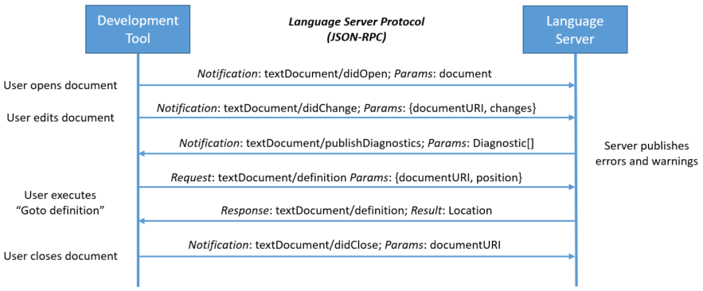

Implement a Language Server in java
The definition of Language server introduced by Microsoft can revolutionize the way to define common operations made available for an editor.
Several time ago when an editor was created, it was necessary implement all the business logic to provide some activities very common in an code editor as keyword highlighting, auto-hint and auto-complete and so on. But what happens if I define only one language server and provide a way to use it as a server that send/receive messages from multiple editor (clients)?
Communication through JSON-RPC 2.0
The communication between editor clients and language server are made using JSON-RPC protocol but it is also possible add HTTP level transportation on top. In this way is possible consume the LS as a remote server with URL endpoints to establish the communication and also provide some health checks.
The communication is bidirectional, this means that both client and server can send and receive messages from/to the opposite component.

More information about standards, specification and provided implementations for several languages in the link
Implement a LS in Java
The language server specification provided by Microsoft consists in a collection of interfaces with specific responsibility for each kind of operation that the LS implementation want support or not. In order to define the capabilities of our LS is necessary implements the interfaces provided by the standard. On Java side there is a very useful collection of interfaces for LSP standard: LSP4J.
More in depth implementation
Implementation notes
In this workaround, client and sever components are defined in the same Java project setting up using Maven. The output of our personal LS server will be a jar that will be invoked from the shell.
First of all add LSP4J/LSP4J JSON-RPC as maven dependency into the pom.xml:
<!-- https://mvnrepository.com/artifact/org.eclipse.lsp4j/org.eclipse.lsp4j.jsonrpc -->
<dependency>
<groupId>org.eclipse.lsp4j</groupId>
<artifactId>org.eclipse.lsp4j.jsonrpc</artifactId>
<version>0.4.1</version>
</dependency>
<!-- https://mvnrepository.com/artifact/org.eclipse.lsp4j/org.eclipse.lsp4j -->
<dependency>
<groupId>org.eclipse.lsp4j</groupId>
<artifactId>org.eclipse.lsp4j</artifactId>
<version>0.4.1</version>
</dependency>
After that we need to define two interfaces that extends the LanguageServer and the LanguageClient. Of course we need to define its implementation classes to be able to made some action as client or as server.
Note
The interfaces
LanguageServerandLanguageClientimplement the Endpoint interface. In this way the underhood communication layer from clients to the server is already managed.
@JsonSegment("server")
public interface IMyLanguageServer extends LanguageServer {}
@JsonSegment("client")
public interface IMyLanguageClient extends LanguageClient {
public void start(LanguageServer serverLauncher);
}
Note
The annotation
@JsonSegmentare provided by LSP4J and are used to define the internal routing of our methods. For example for the client start method the URI will be /client/start.
The server concrete implementation:
public class MyLanguageServerImpl implements IMyLanguageServer {
private final List<LanguageClient> clients = new CopyOnWriteArrayList<>();
private TextDocumentService textService;
private WorkspaceService workspaceService;
public MyLanguageServerImpl() {
//initialize textDocumentService and workspaceService
}
public CompletableFuture<InitializeResult> initialize(InitializeParams params) {
// TODO Auto-generated method stub
return null;
}
public CompletableFuture<Object> shutdown() {
// TODO Auto-generated method stub
return null;
}
public void exit() {
// TODO Auto-generated method stub
}
public TextDocumentService getTextDocumentService() {
// TODO Auto-generated method stub
return null;
}
public WorkspaceService getWorkspaceService() {
// TODO Auto-generated method stub
return null;
}
public Runnable setRemoteProxy(LanguageClient languageClient) {
this.clients.add(languageClient);
return () -> this.clients.remove(languageClient);
}
public List<LanguageClient> getClientList() {
return clients;
}
}
Note
In this overview is not specified the entire implementation of the language server implementation, because the focus is on the set of operations to define the LS and be able to listen for incoming communications with other clients. A more in depth overview about LS implementation will be added in the future in a separate post.
And the client concrete implementation:
public class MyLanguageClientImpl implements IMyLanguageClient {
public void telemetryEvent(Object object) {
// TODO Auto-generated method stub
}
public void publishDiagnostics(PublishDiagnosticsParams diagnostics) {
// TODO Auto-generated method stub
}
public void showMessage(MessageParams messageParams) {
// TODO Auto-generated method stub
}
public CompletableFuture<MessageActionItem> showMessageRequest(
ShowMessageRequestParams requestParams) {
// TODO Auto-generated method stub
return null;
}
public void logMessage(MessageParams message) {
// TODO Auto-generated method stub
}
@Override
public void start(LanguageServer serverLauncher) {
System.out.println("CLIENT SEND REQUEST TO THE SERVER");
serverLauncher.initialize(null);
}
}
Note - 1
In a common scenario where the language server is used by a well defined client is not necessary implement both client and server, but just the server. The underline communication with JSON-RPC will be able to realize the sharing messages from the two actors.
Note - 2
The
start()method defined in the client interface will be used in the main and using the communication channel provided by the server we can send a request to the server.
After that as last step is necessary define the main method and turn all on in order to implement the client/server comunication:
public class App {
static Logger logger = LogManager.getLogger(Main.class);
public static void main(String[] args) throws InterruptedException, ExecutionException {
logger.warn("Start debugging");
startServer(System.in, System.out);
}
public static void startServer(InputStream in, OutputStream out)
throws InterruptedException, ExecutionException {
MyLanguageServerImpl myServer = new MyLanguageServerImpl();
Launcher<LanguageClient> l = LSPLauncher.createServerLauncher(myServer, in, out);
Future<?> startListening = l.startListening();
myServer.setRemoteProxy(l.getRemoteProxy());
startListening.get();
}
}
So the key method is createServerLauncher().
Their purpose is to create the endpoint for the opposite site (that need to know who want call it) and manage the stream channel communication (in this case will be the standard input and standard output).
-
startListining()allow the server to be in listening mode for incoming connection from a client. -
setRemoteProxy()is invoked to register the language client retrieved by the proxy (Launcher) into the internal list that will be used by the other services defined in order to be compliant with the LSP standard (i.e. TextDocumentService concrete implementation class).
When everything is defined correctly is possible deploy the jar with the maven command mvn package and in order to test that the server doesn't go in some exceptions is possible run it from the terminal, into the target folder where the jar is generated:
java -jar mylangserver-0.0.1-jar-with-dependencies.jar
A possible output could be this one:
09:35:17.647 [main] WARN com.test.lsp.Main - Start debugging
_
Note
If the client already exsist and it is compliant to the LSP definition is not necessary start the server in a standalone mode but is necessary provide a plugin that define the path of the language server and provide the client implementation of the LSP. In the next posts will be analyzed the definition of client implementation realized with: - Visual Studio Code extension plugin - Eclipse IDE plugin - Eclipse Che The cool things (and obliviously the success of the LSP approach) is that for three different client there is only ONE implementation of the LS.